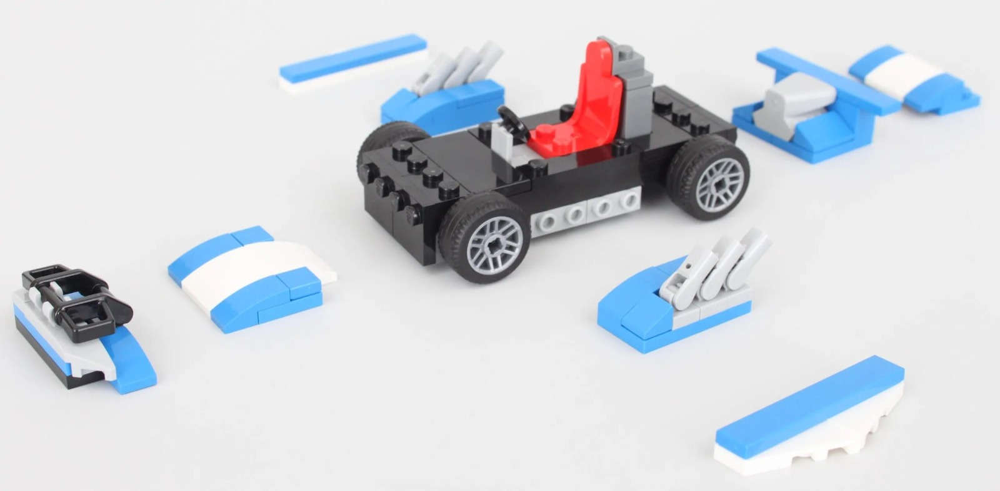
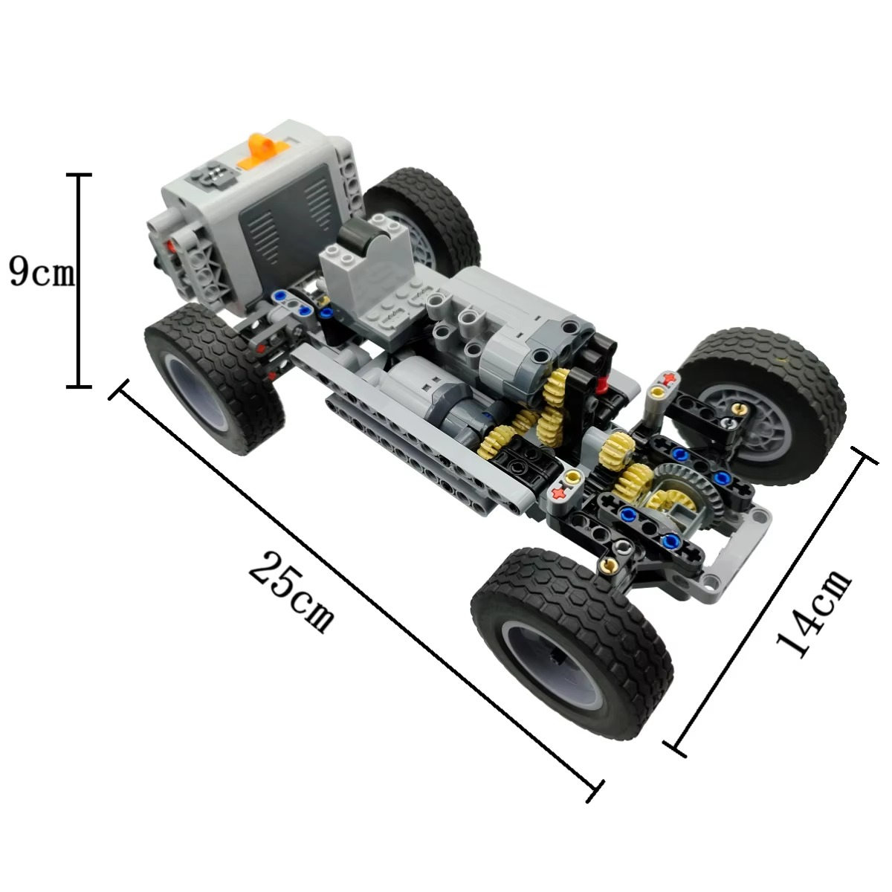

Paso 1: Ensamble del Carro Robótico
- Diseño del chasis:
- Utiliza materiales como madera, plástico o LEGO.
- Diseña una estructura resistente para soportar los componentes electrónicos y los motores.
- 
- Fijación de motores y ruedas:
- Asegura los motores DC al chasis y conecta las ruedas.
- Verifica que las ruedas estén alineadas para garantizar un movimiento estable.
- 
- Estabilidad adicional:
- Agrega una rueda loca (rueda libre) en la parte frontal o trasera para mayor estabilidad.